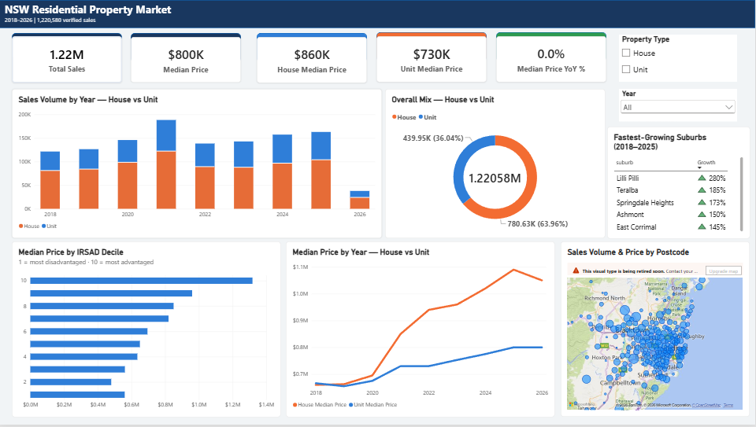

How do location, socio-economic profile and property type drive housing prices across NSW?
01 Case study · Data warehouse + BI
NSW Residential Property Market Intelligence
Cleaning, enriching, and modelling 2.2 million real NSW government property sale records into a verified data warehouse and interactive dashboard revealing how location, socio-economic profile, and property type drive housing prices across the state.

2.2M+ records cleaned
608 postcodes
01 — In 30 seconds
The Short Version
Cleaned 2.2M government sale records in Python, enriched them with ABS SEIFA indexes, modelled a MySQL star schema and built a two-page Power BI dashboard.
Price tracks socio-economic advantage (a 2.3× gap), houses outgrew units in the 2021 boom, and regional NSW is outperforming the capital.
2.2M+
Raw Government Sale Records Loaded
608
NSW Postcodes Modelled
1.2M+
Verified Sales in the Warehouse
4
ABS SEIFA Indexes Integrated
02 — Visual Analysis
Dashboard Outputs
Click any screenshot to view it full size.
03 — Methodology
How It Was Done
Five steps. Select one to see the detail.
01
Data Sourcing & Cleaning
Loaded 2,206,232 raw records and resolved seven real data-quality issues, including 560,545 duplicate rows, mixed price scales, mixed land-area units, and inconsistent property-type labels.
02
Socio-Economic Enrichment
Joined all four ABS SEIFA 2021 indexes onto the cleaned sales data by postcode — a 100% match rate across every NSW postcode.
03
Relational Warehouse Design
Normalised the data into a MySQL star schema: a fact_property_sales table referencing a dim_postcode_seifa dimension table.
04
Analytical SQL
LAG for year-over-year growth, NTILE for price quartiles, and suburb-relative outlier detection.
05
Interactive Power BI Dashboard
Connected Power BI to the MySQL warehouse and built a DAX measure library across a two-page overview and suburb drill-down.
04 — Key Findings
What the Data Revealed
Houses Outpaced Units in the 2021 Boom
In the biggest boom year, house prices grew at roughly double the rate of units.
Price Tracks Socio-Economic Advantage
Median price climbs from $555K in the most disadvantaged SEIFA decile to $1.3M in the most advantaged.
Regional NSW Outperforming the Capital
The fastest-growing suburbs cluster around Albury-Wagga, Newcastle, the Snowy Mountains and Hunter Valley.